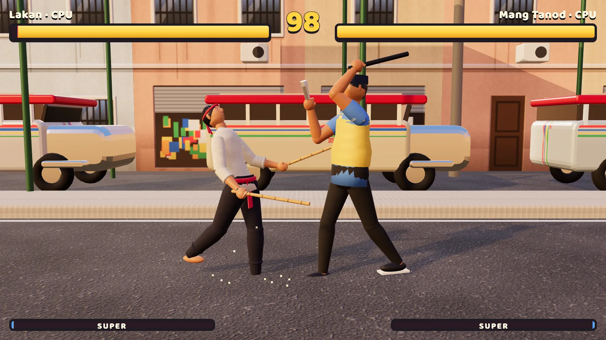

Bakbakan sa Kanto
The street fighting classic, Pinoy style

FightingKeyboard · Controller · TouchFree, in the browser
Play Bakbakan sa KantoAbout the game
Bakbakan means a brawl, and a kanto is a street corner. This is a one-on-one 3D fighting game in the tradition of the arcade classics, set in places any Manileño would recognize: the jeepney terminal in Cubao, a barangay covered court at night with the bleachers full, and the crowded palengke (market) in Divisoria. At the end of the arcade ladder waits a fourth stage, a huge balete tree in the mist, where the Kapre lives.
The four fighters each bring a different way to win. Lakan from Batangas is an arnisador with two rattan sticks, balanced and good at range. Dalisay from Baras, Rizal fights with sikaran kicks; she is fast and has no projectile. Mang Tanod, the barangay watchman, is slow and tough, with a flashlight beam, a whistle and his batuta (nightstick). Boy Balut, the egg vendor from Pateros, lobs balut from his basket and slides in low. The Kapre is the boss: huge, slow, smoking a cigar, with a grab you cannot break. Beat him in Arcade once and you can play as him.
How to play
Rounds last 99 seconds and the match is best of three. To guard, hold away from your opponent. Crouch to block sweeps and slides; stand to block overhead attacks and jump-ins. Specials use classic motions, like down, down-forward, forward and Special, but there is also an easy way: Special alone, down plus Special, or back plus Special. A light attack can chain into another light or a heavy, and any normal hit can be canceled into a special. Light and heavy together up close is a throw; press them right back to break one. Fighting fills your super bar, and heavy plus Special fires the super, the only thing that can finish a guarding opponent.
- Keyboard, player 1: A and D walk (walking back guards), W jumps, S crouches, J light, K heavy, L special, I throw, U super.
- Keyboard, player 2: the arrow keys move, and 1 to 5 on the number row or numpad are light, heavy, special, throw and super.
- Controller: any gamepad, PlayStation included. Stick or D-pad to move, Square light, Triangle heavy, Circle or Cross special, L1 throw, R1 super, Options to pause.
- Phone and tablet: a movement pad on the left, and L, H, S, HAGIS (throw) and SUPER buttons on the right.
There are three modes. Arcade is four fights ending with the Kapre, with a score. Versus is against a friend on one keyboard or two controllers, or against the CPU at Madali (easy), Katamtaman (medium) or Mahirap (hard). Ensayo (training) gives you a dummy you can set to stand, crouch, jump, guard or fight back, that always has a full super bar.
Tips
- Do not mash. Catching someone just as they start an attack is a counter hit and hurts more, but swinging wildly gives them the same chance against you.
- Learn one simple combo per fighter: light, heavy, then cancel into a special. Later hits in a combo do less damage, so short and reliable beats long and risky.
- If an opponent keeps blocking, mix in a throw. Guarding does nothing against it.
- Save the super for the end of a round. It is the one move that can finish someone who refuses to stop guarding.
- Against the Kapre, stay out of his reach and punish his slow swings. His grab cannot be broken, so do not stand next to him.
Arnis, sikaran and the street corner
Arnis, also called eskrima or kali, is the best-known Filipino martial art. It is built around fighting with sticks, often rattan. Sinawali, the weaving pattern of two sticks that Lakan's rush is named after, is one of its signature drills. In 2009 a Philippine law named arnis the national martial art and sport.
Sikaran is a kicking art from Baras in Rizal province, where it is said to have grown up among farmers. Fighters rely mostly on their legs, which is why Dalisay never throws a fireball.
The other fighters come from everyday street life. Every barangay (the smallest unit of local government) has tanod, volunteer watchmen who patrol at night. The balut vendor calling out after dark is a familiar sound in many neighborhoods, and the town of Pateros has long been known for raising ducks and making balut. And the Kapre, the hairy giant said to sit in big old trees with his cigar, is one of the most famous creatures in Filipino folklore.